请参见 W3C CSS 2.1中关于 ’cursor‘ 的说明 ： http://www.w3.org/TR/CSS21/ui.html#propdef-cursor
'cursor:hand' 特性值是由浏览器厂商设置的扩展样式值，现在只有 IE 和 Opera 支持，并不是 CSS 相关规范中制定的，因此其它浏览器均不支持该特性值。
使用 'cursor:hand' 样式会导致 Safari Chrome Firefox 浏览器不呈现手型光标。
| IE6 IE7 IE8 Opera |
|---|
MDSN 中关于 'cursor' 的说明， 包括一些 W3C 中没有规定的鼠标样式，不仅 IE 支持，其他各浏览器除 Opera 也都支持，具体 value 值如下：
value 有下面的形式：
实际效果如下表：
| IE6 IE7 IE8 | Firefox Chrome Safari | |
|---|---|---|
| all-scroll | 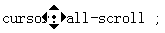 | 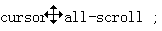 |
| col-resize | 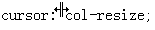 | 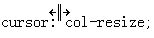 |
| row-resize | 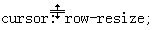 | 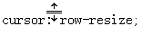 |
| hand | 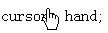 | 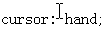 |
| no-drop | 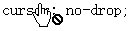 | 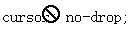 |
| not-allowed | 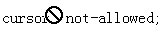 | 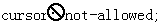 |
| vertical-text | 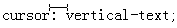 |
可见：
使用 CSS 规范中定义的 'cursor: pointer' 样式代替 'cursor:hand' 样式。
| 操作系统版本: | Windows 7 Ultimate build 7600 |
|---|---|
| 浏览器版本: |
IE6
IE7 IE8 Firefox 3.6 Chrome 4.0.302.3 dev Safari 4.0.4 Opera 10.51 |
| 测试页面: | |
| 本文更新时间: | 2010-07-20 |
cursor hand pointer